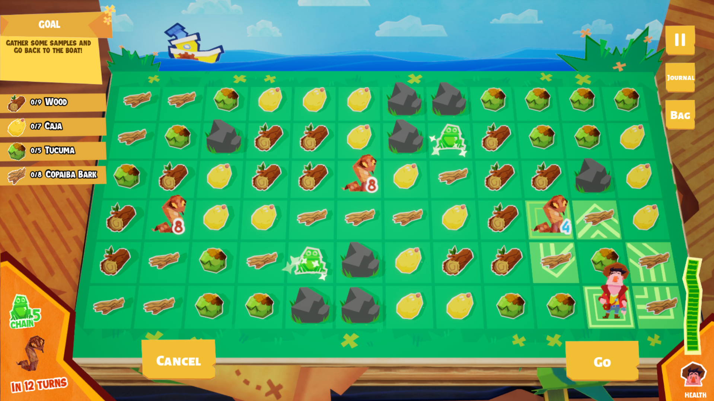

Amazon Quest
In this game, the player controls a duo of researchers going down the Amazon River and learning about it’s history, peoples, fauna and flora.

Steam Page
The game combines a modified Match 3/Chain Matching mechanics with resource management, and players learn together
with the game’s protagonist about this massive, Europe-sized forest and its culture.
We created a demo requested by the Amazonas Government on behalf of Suframa, and delivered it in April/2023.
My responsibilities were the following:
- Create a singular big system that combines 3 individual mechanics: Interacting with NPCs, Match 3, Navigation
- Prototype every mechanics and screen flow, to understand the relationship between mechanics and its individual elements
- Guidelines for game feel - specially on positive feedbacks for players - and easy affordance for the target audience.;
- Research of the Amazonian Culture, it’s traditional peoples, history, fruits, animals and places, and teaching it through play.
- Conducting playtest and feedback loop;
- Balancing;
This project also gave chance to improve some aspects of the general studio pipeline:
- With the Engineering Team, I designed and we developed a custom system of Analytics
- Also with the Engineering Team, we developed a Level Design tool, unique for the game,that aided on a tool-oriented Design culture.
- Together with 2 designers, we compiled a Playtest Pipeline to extract the most data out of playtests
Although I was given the role of design lead on this project, I had 2 partner Designers on this project:
Graziele Mendonça, who was the original Designer and did all the groundwork!
Vitor Jun, who worked together with me on many of the responsabilities.
Steam Page
A personal letter to you
Working on Amazon Quest was a process of decolonization that I wish other designers could have the luck of going through.
This is the game that changed me the most, and I feel it would be crazy not to leave here a mixture of love letter and request to you.
I’ve did some personal studies about the very elusive Rondon-Roosevelt expedition that inspired the game, in which the american president Theodore Roosevelt explored the River of Doubt with brazilian indigenist Candido Rondon, you can find it here.
Knowing about this story may give you a sense of scale of how incredibly big the Amazon Rainforest is.
I also met a lot of people online, from locations that would show up in game, so I could understand what they’d like to see represented on their towns.
This got me affectively involved with the communities, and introduced me to pro-indigenous activism - specially on the Acampamento Terra Livre and I learned the history of pre-colonial Brazil.
Stories and a struggle that has been here all along, but just like the Rondon-Roosevelt expedition,
went barely seen and felt for people outside of the process.
I won’t be the one lecturing you on this stuff, but I’ll recommend you hearing the amazing Txai Surui on it!